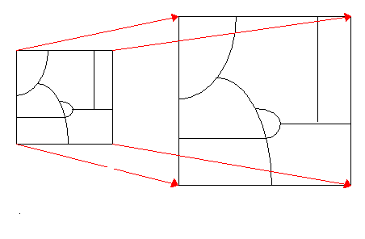

Spatial adjust
Spatial adjust geoprocess applies a spatial transform on features of a vectorial layer.
Transforms actually supported by gvSIG are:

This geoprocess needs a set of control points, with the coordinates of a point before and after the transformation.
Each transformation will require a minimum number of control points. Usually we are going to use more points than the minimum,
improving the quality of the transformation by a root mean square adjust.
To give an idea of the quality of the transformation the geoprocess will provide a root mean square error for each control point,
and a global root mean square error.